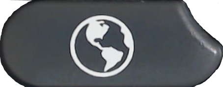
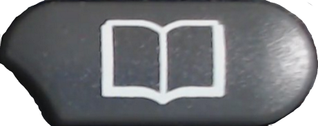

The Electrical Engineering Log
References
#1 - Crosstalk Solutions
YouTube Channel FreePBX 101 version 14
101 - Install and configure RasPBX
MagPi 78
"
Build a telephone exchange
" by Rob Zwetsloot
Asterisk for Raspberry Pi
102 - Connecting to a POTS Line
Configuring an Obi 110 Device as an FXO Gateway
How to set up the Obihai OBi110 as a PSTN gateway
OBi Support
Mango's Guide to Configuring an OBi100, OBi110, OBi202, OBi200, OBi302, and OBi300 ATA
Freephoneline.ca ATA Setup - Factory reset your OBi110
OBIHAI OBI100 - HOW TO RESET/RESTORE FACTORY DEFAULTS (Post by WelshPaul)
ObiTALK Forum - I can't get web portal to work??
ObiTALK Forum - Possible to use OBi110 to as an FXO port on an Asterisk server?
200 - Setting up Cisco 79xx Phones
Raspberry Pi DHCP Server
by CWNE88
Defining DHCP option 150 for Cisco IP phones
by Jim Jones
DHCP Option 150 & DHCP Option 66
Reset 7900 Series IP Phones if Password is Set
HOW TO setup Raspberry Pi as a TFTP Server
by Chris Nadeau
YouTube - Cisco 7942g IP Phone Configuration on FreePBX In-Depth(Without Endpoint Manager)
201 - Adding Ringtones to Cisco 79xx Phones
202 - Adding Background Images to Cisco 79xx Phones
203 - Adding Directories to Cisco 79xx Phones
204 - Adding Services to Cisco 79xx Phones
205 - Adding Info/Help to Cisco 79xx Phones
Open79XX XML Directory
by coreymcf & joeatcsma
206 - Take a screenshot of Cisco 79xx Phones
900 - Securing the installation
Using a Remote Extension with FreePBX/Asterisk (PDF)
Asterisk on Raspberry Pi
by Radovan Brezula - Enable SSL
Other
Mike's PBX Cookbook
Asterisk Cisco 79XX XML Services

Asterisk for Raspberry Pi (RasPBX) Documentation
Asterisk phone cisco 79×1 xml configuration files for SIP
Cisco and FreePBX
Cisco 7961G with Asterisk
Cisco 7941, Asterisk And SIP
Cisco Phone 7940 7960 Directory Button Script

Cisco Unified IP Phone Services Application Development Notes for Cisco Unified Communications Manager and Multiplatform Phones
Chapter: CiscoIPPhone XML Objects
Provides some information regarding XML Tags and Attributes
Cisco-VoIP-SIP:XML Configuration Information
Provides some examples for Phone configuration files as well as good documentation regarding XML tags
Convert Cisco 7941G Phone from SCCP (Skinny Call Control Protocol) to SIP protocol
Display All PHP Errors: Basic & Advanced Usage
Provides information for debugging PHP Scripts
How to Reset a Cisco 7941/7961 VoIP Phone to Factory Default
How to take a screen shot from a Cisco IP Phone
MySql default password and password change method
Some information regarding accessing MySQL Databases
PHP MySQL Select Data
Good examples for connecting to a MySQL database and running queries
Provisioning Cisco 79xx IP Phones
Raspberry Pi TFTP server
Information on how to enable TFTP on the Raspberry Pi
SEPMAC.cnf.xml
Provides some examples for Phone configuration files along with information for each setting
Setting TFTP address in your Cisco IP Phone 7961/7941
No good if phone has been reset
GitLab repository with Cisco Firmware
UC TOOLKIT: USING AUDACITY FOR CUCM RING TONES
Great information on how to use Audacity to create ringtones